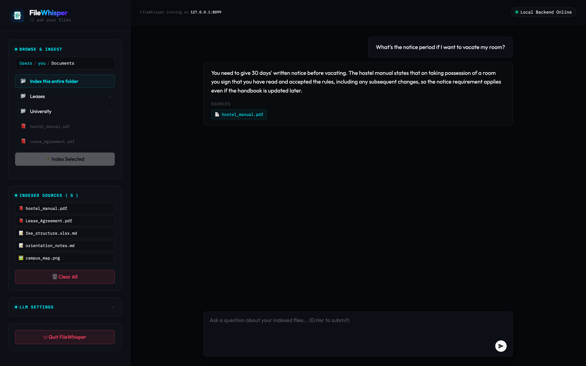

100% local • no API key needed
Chat with your documents,
completely offline.
FileWhisper lets you search and ask questions about your files—PDFs, text, notes, even scanned images. Everything runs directly on your computer, so your data stays 100% private and never leaves your machine.
FileWhisper Desktop Interface

Getting started is simple
1
Paste one line
Open Terminal and paste the install command below. It sets everything up and adds a FileWhisper icon to your Desktop.
2
Double-click to start
Double-click the FileWhisper icon. It opens in your browser and works with a free built-in assistant—no API key required.
3
Select folder & chat
Select any local folder to index your documents and start asking questions offline.
Voila! Just like that, you are ready to chat.
Get FileWhisper
Open a terminal, paste the line for your system, and press Enter. Everything runs locally on your machine.
$
Features
Data Privacy & Control
All document scraping, chunking, and embedding generation happen on your own computer. Your documents are never uploaded to the cloud or third-party servers. Your files stay private.
No Complex Setup
Traditional local search programs require Docker containers, databases, or fiddly Python setups. FileWhisper installs with one command and runs as a local app in your browser—no API key needed to get started.
Source Citation Tracking
Every answer returned by FileWhisper is directly backed by your local files. Clickable source tags display the exact name of the file used for the context.
Flexible LLM Providers
Connect seamlessly to your provider of choice (Groq, Anthropic Claude, OpenAI, Google Gemini, or any custom local API endpoint) in seconds. Just save your preferences inside the app.